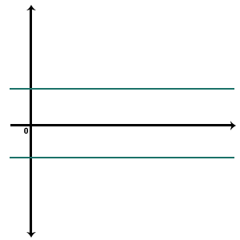
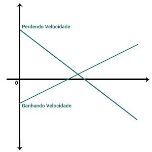
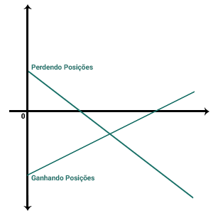
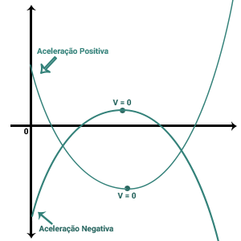
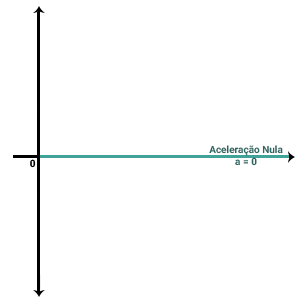

Calculadora das principais fórmulas utilizadas na física.
Velocidade Média
Fórmulas:
Vm = d / t || d = Vm . t || t = Vm / d
Cálculo:
Aviso: deixe em branco para definir uma incógnita.
Aqui você pode converter unidades para utilizá-las na forma correta na hora de fazer cálculos com equações e pode também simular outras coisas.
Conversor de Medidas
| Km/h | m/s |
|---|---|
| Hora em h/min | Hora decimal |
, |
|
| ºC | ºF |
| Planeta/Estrela | Peso no local | Peso em relação à Terra |
|---|---|---|
| Sol | - | - |
| Mercúrio | - | - |
| Vênus | - | - |
| Terra | - | - |
| Marte | - | - |
| Júpiter | - | - |
| Saturno | - | - |
| Urano | - | - |
| Netuno | - | - |
| Lua | - | - |
Os gigantes gasosos (Júpiter, Saturno, Urano e Netuno) não tem uma superfície sólida observável. Nesse caso foi considerado para o cálculo a distância ao centro do planeta onde a pressão atmosférica é de 1 atm, igual à pressão atmosférica ao nível do mar na Terra
As principais informações, como a velocidade da luz e do som, em um só lugar.
Informações sobre os movimentos M.R.U.(Movimento retilíneo uniforme) e M.R.U.V. (Movimento retilíneo uniformemente variado).
| M.R.U. | M.R.U.V. |
|---|---|
| Fórmulas | Fórmulas |
| Vm = D / T | Vm = (Sf - S0)/(T0 - Tf) |
| Sf = S0 + V.t | Sf = S0 + V.t + ((a.t²)/2) |
| Vf² = V0² + 2.a.(Sf-S0) | |
| a = 0 | a = (V0 - Vf)/(T0 - Tf) |
| Gráficos | Gráficos |
| Velocidade x Tempo (V.t) | Velocidade x Tempo (V.t) |
|  |  |
| Posição x Tempo (S.t) | Posição x Tempo (S.t) |
|  |  |
| Aceleração x Tempo (a.t) | Aceleracão x Tempo (a.t) |
|  |